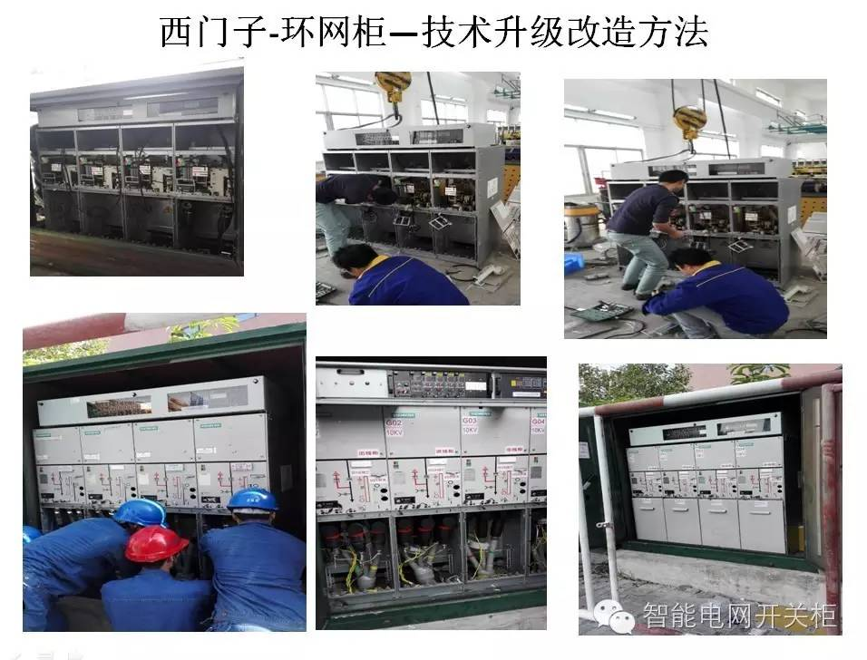
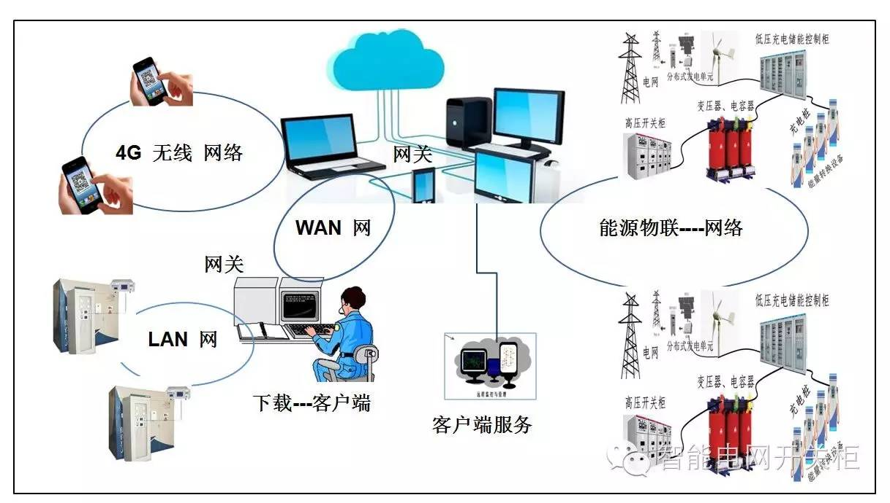
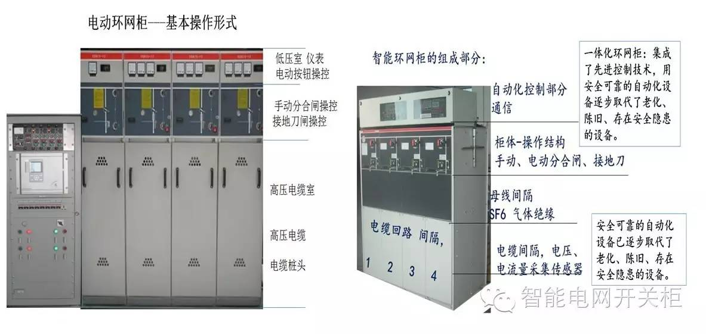
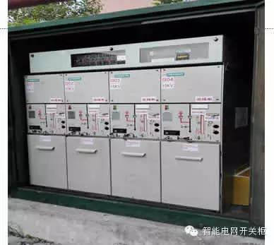
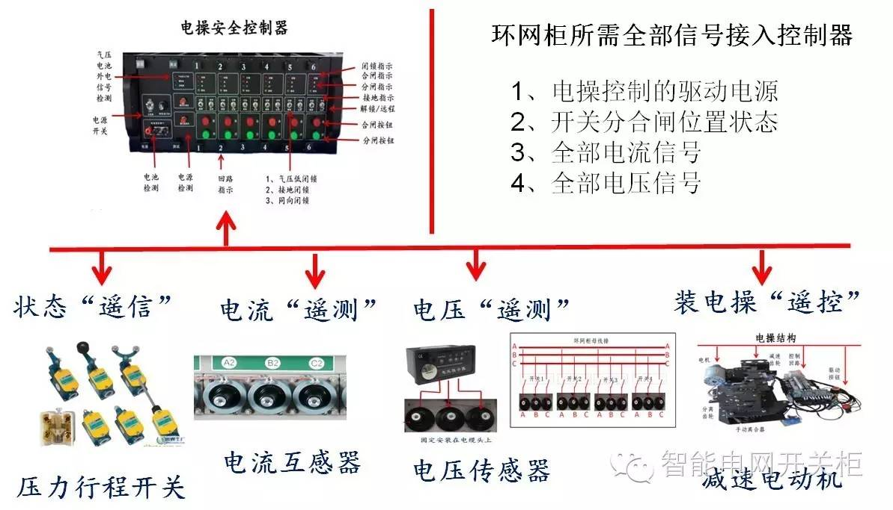
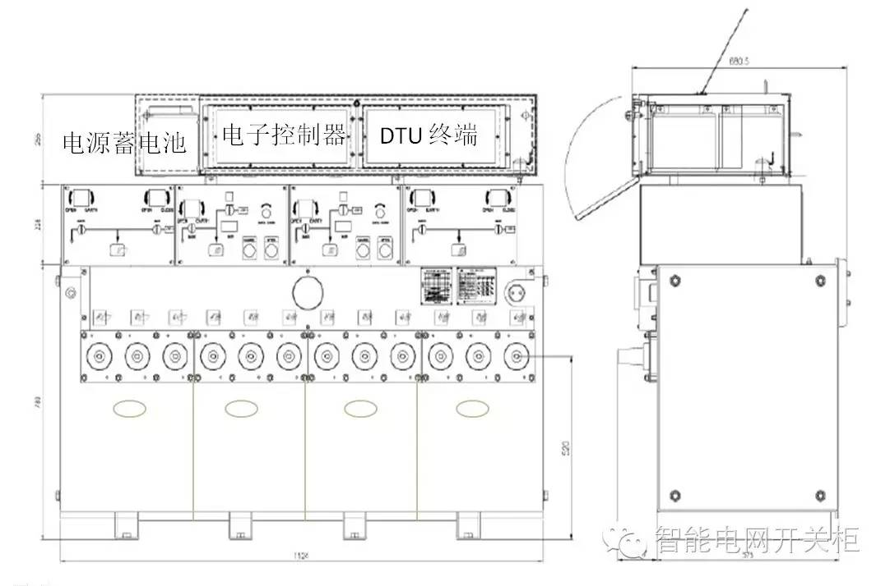
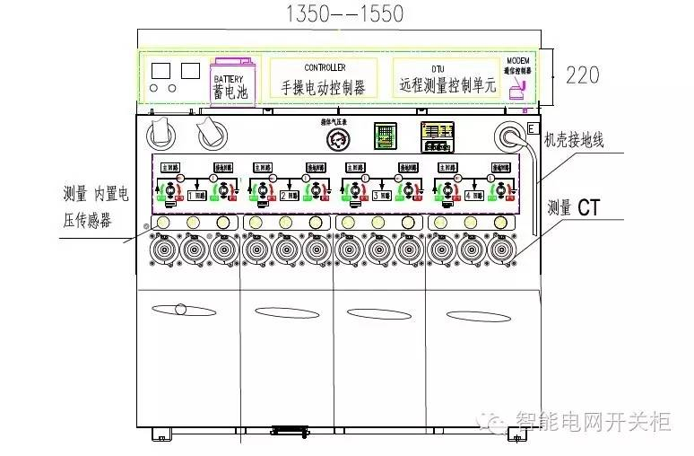

南方电网 发展战略：
创建国际一流电网企业，必须相应地打造五个方面能力。一是提升可持续发展能力。 充分发挥电网平台作用，推进需求侧用能变革。二是提升经营能力。 三是提升创新能力。 四是提升国际化能力。 五是提升品牌运营能力。
南方电网建设具体的发展目标是：
到2020年，确保完成“185611”目标，即公司中心城区客户平均停电时间低于1小时，广州、深圳等10个主要城市客户平均停电时间低于1小时；客户服务第三方满意度不低于80分；非化石能源电量占比不低于50%；净资产收益率不低于6%，累计有效专利拥有数不低于10000项；境外资产占比不低于10%。
配电网的建设与电气设备升级改造也是“十三五”规划中电网建设的重要方面。
目前配网结构普遍薄弱，电气设备自动化水平低，供电可靠性偏低，提升配网电气设备技术水平，对开关柜升级改造是重要紧迫的任务。
加快配电网改造升级的任务有两方面要同时推进，升级改造和更新换代同时进行。
开关柜技术升级改造包括一次开关柜和二次控制回路二部分。

1、配电一二次融合旨在提升配电网建设改造的水平
近期南方电网公司加快了中心城市的配电网建设发展步伐，长期的设备信息化水平低造成的配电网瓶颈，严重制约了城市电力系统的升级和新技术的应用，配电网技术升级势在必行。到2020年我国配电网自动覆盖率要达到90%，配电自动化升级也必然是未来的投资重点，市场空间广阔。
2、简化配电设备种类，提升标准化、智能化水平
随着设备自动化时代到来，传统的的人工作业在大步向自动化智能制造进行着升级和转型，传统的经济模式无论速度和防错方面的控制机制需求变得异常迫切。在工业设备和IT设备作为信息通信产业重要基础设施，进入高速发展期的同时，在产品架构、制造模式、产业生态等多方面经历着变革。而电气开关设备集成系统是现代工业实现配电网智能自动化模块的基石。
配网智能化水平提高的前提是应用“物联网+”，即“物、服务与人的互联”，代表了未来电气设备制造业发展的方向。“物联网+”研发和改进过程控制系统、通信解决方案、传感器和软件。利用互联网作为开放平台进行数据交换，为各类应用的产生铺平道路，改善工业和电力领域的灵活性和生产效率。“物联网+”中的“物”指配备传感器和软件并具备计算能力的电气设备。
3、配电设备的一二次融合重要是开展一二次成套设备集成化设计
设备生产厂和集成商会配电设备做一些深度的开发，而且集成的设备也比较多，牵扯到的设备品种也比较多，他们是提供整个解决方案，作为设备商来说，设备供应商前期对设计院和用户做了很多的技术引导，要得到设计院和用户对他们的产品认可，这样也就会对集成化产品在整个安装、调试、验收中配合工作。

配网设备一二次集成是把单纯的手动开关柜改装成智能开关柜，好处主要表现在；能够充分利用设备，延长开关柜的使用寿命周期。对设备的改造需要解决的主要技术问题。

4、 配电自动化的目标定位
是解决故障处理问题，推出电气开关设备一二次融合技术优先要解决的也是故障检测、故障处理问题。
（1）A+、A类供电区域主要以“光纤+三遥”模式，主站集中型自动化的模式进行建设。
（2）B、C、D、E类供电区域需要开展配电自动化建设，而是着力采用就地型馈线自动化的方式处理故障，采用故障指示器的方式检测定位故障，采用二遥方式、无线公网方式为主的建设模式。
（3）配网自动化的推广思路：对于网架水平高，可靠性要求高的地区推用智能分布式馈线自动化；
（4）对于大部分地区以电缆网络为主的提倡运用集中型馈线自动化；
（5）架空线路网络则鼓励就地式馈线自动化；
（6）对于农村线路，其主要矛盾还是解决故障查找定位问题。
5、集成化解决方案
通过提高配电一二次设备的标准化、集成化水平，提升配电设备运行水平、运维质量与效率。更好地服务配电网建设改造行动计划。
配电一二次成套化设备技术方案重点包括
（1）柱上开关一二次融合方案
（2）环网柜一二次融合方案

6、集成化设备案例
（1）、优化了箱体结构。采取前后开门增高顶板等新结构、新工艺。解决设备安装和检修的问题。
（2）、是解决现场PT电压互感器取电,解决了大功率长时间连续供电的问题。
（3）、是解决电压采集。用新型的电容式传感器技术实现了电压信息采集，智能装置还能够根据电压的运行功率判断出电流的方向。解决了电力线路的检测信息的不完整技术难题。
（4）、 解决电流采集问题。解决了电功率和故障方向判断的技术问题，运用采集到电流信息，推算出电流的功率角，为电网稳定的环网线路运行提供了大量的基础数据信息。
（5）、解决智能终端装置在施工安装困难的问题。原来施工方法是现场零件组装，受户外天气影响和工作场地的限制，给施工带来诸多难题。经过我们的对施工流程的优化后，90%的改装工作量放在了后台进行，把所需的各种元器件都进行提前预置，这样做极大方便了现场施工，也明显提升了改装设备的质量。
（6）、是解决电操驱动电路安装问题：电动机控制分合闸的机械传动部分是整个智能开关柜的核心部分，如何能准确驱动电机的转动影响着整个开关柜的安全。我们在电动操作机构上有了创新的技术突破，不仅能够用最可靠的电路进行控制，而且做到了无差错安全控制，提高了操作的安全性。


7、配网设备存在的主要问题：
（1）一、二次设备接口不匹配，兼容性、扩展性、互换性差；
（2）一、二次设备厂家责任纠纷。
8、一二次融合工作总体目标
（1）柱上开关的一二次融合工作一步到位；
（2）环网柜的一二次融合解决一二次设备的组合、装置性更换及工厂化维修问题，
（3）远期目标解决一二次设备深度融合问题，
2017实现；各阶段应提供相应的一二次融合成套化设备招标技术规范书和检测规范。
9、典型设计、招标技术也出台了相应规范
在电气设备设计方面电动汽车充电、太阳能、新能源介入对电能质量的影响，配网自动化从离散自动化到运动控制自动化，都在围绕现有的技术、产品和解决方案进行进一步创新技术开发和应用。七千多万台的电气互联互联设备，以及所涉及的正在运行的控制系统，配电网信息化将会成为世界上最大的工业云平台之一。这些云数据平台的建设是新的智能电气设备的数字化解决方案。

10、 适应配电网建设的投资要求，
故障指示器要具备处理短路故障和单相接地故障的功能
故障指示器是十三五提高配电自动化覆盖率的重要手段，为适应配电网建设的要求，故障指示器要具备处理短路故障和单相接地故障的功能。目前，根据不同的线路类型、通信方式和接地检测方式，故障指示器共分为9种类型。